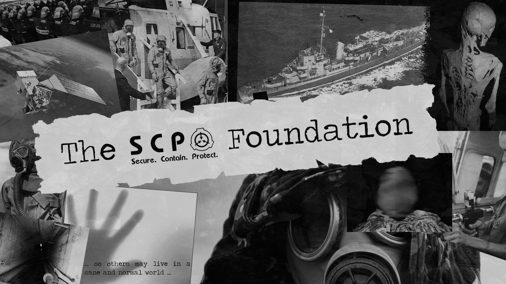
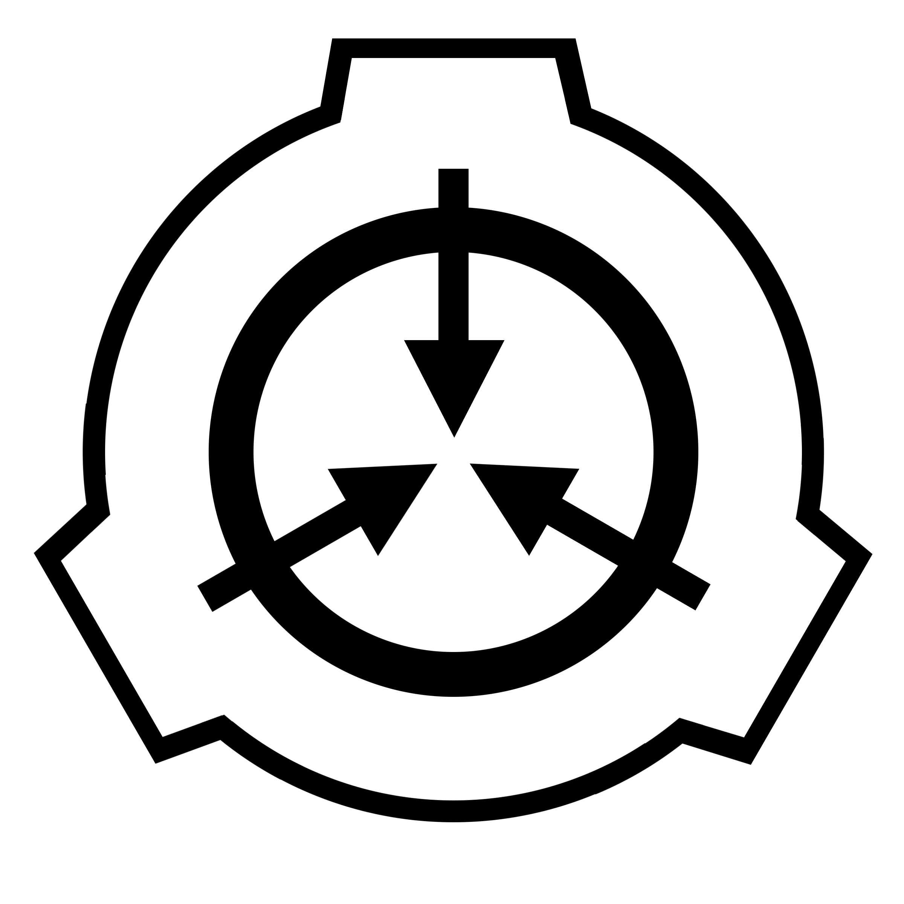

Mankind in its present state has been around for a quarter of a million years, yet only a small fraction of that has been of any significance.
So, what did we do for nearly 250,000 years? We huddled in caves and around small fires, fearful of the things that we didn't understand. It was more than explaining why the sun came up, it was the mystery of enormous birds with heads of men and rocks that came to life. So we called them "gods" and "demons", begged them to spare us, and prayed for salvation.
In time, their numbers dwindled and ours rose. The world began to make more sense when there were fewer things to fear, yet the unexplained can never truly go away, as if the universe demands the absurd and impossible.
Mankind must not go back to hiding in fear. No one else will protect us, and we must stand up for ourselves.
While the rest of mankind dwells in the light, we must stand in the darkness to fight it, contain it, and shield it from the eyes of the public, so that others may live in a sane and normal world.
— The Administrator
MISSION STATEMENT
Operating clandestine and worldwide, the Foundation acts beyond conventional jurisdiction, with the task of containing anomalous objects, entities, and phenomena.
We maintain an extensive database of information regarding anomalies requiring Special Containment Procedures, commonly referred to as "SCPs"; all of which undermine the natural laws that the people of the world implicitly trust in.
We operate to maintain normalcy, so that the worldwide civilian population can live and go on with their daily lives without fear, mistrust, or doubt in their personal beliefs, and to maintain human independence from extraterrestrial, extradimensional, and other extranormal influence.